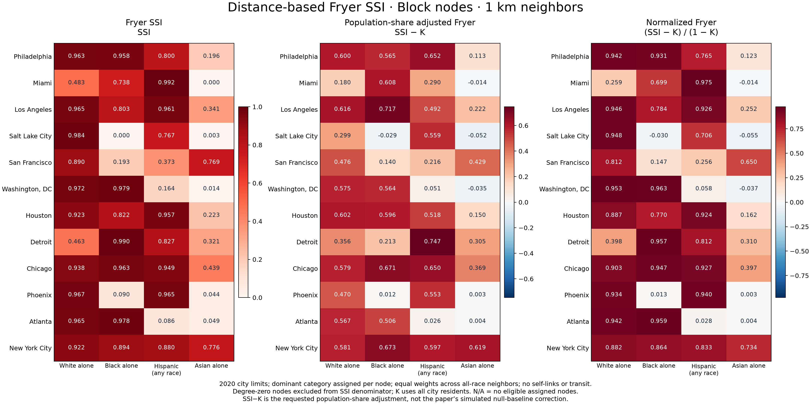
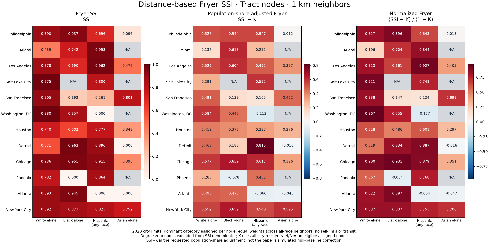
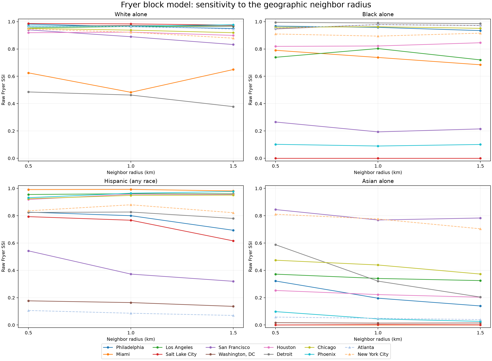

Distance-based Fryer segregation
12 cities including NYC · 2020 Census · four overlapping categories · cached local data · no Routes API calls.
The paper’s residential method connects nearby geographic units and assigns equal weight to each neighbor. Here distinct populated nodes within 1 km are neighbors, and Rᵢⱼ=1/dᵢ, where dᵢ counts all neighbors regardless of category. We restrict this matrix to nodes assigned to the category, retaining original weights. There are no self-links, transit weights, or population weights in R.
Assignment rule: each node receives its largest of the four category counts, even below50%; ties prefer Hispanic, Asian, Black, then White. This follows the pattern in the authors’ released data, whose dominant-category labels differ from a strict >50% reading of “majority” in the paper. The original preprocessing script is unavailable, so our rule is explicit. Nodes with all four counts zero remain other/unclassified. Race-alone populations overlap Hispanic, but each node has one assigned label.
These SSI values describe networks of blocks assigned to a category. Residents living in blocks assigned to another category do not contribute nodes to that category’s SSI, although they remain in K. A zero score indicates no modeled same-category connectivity among eligible assigned nodes; it does not establish that every resident of that race experiences no segregation.
The authors’ code excludes nodes with no geographic neighbors. Eligible nodes with only out-group neighbors have zero local SSI. Each same-category component contributes its Perron eigenvalue weighted by its eligible node count. Its local scores are |component| × eigenvalue × sum-one eigenvector, following the paper. No eligible assigned nodes means undefined, shown as N/A.
Requested columns: raw SSI; SSI−K; (SSI−K)/(1−K). K uses all city residents, including locations excluded from the SSI denominator. The paper subtracts a simulated baseline; SSI−K is the requested population-share adjustment and is labeled accordingly. This is a 2020 city-limit application with explicitly defined category rules, not a replication of the paper’s 2000 MSA estimates.
Main block scores · Tract companion · 11-city PSSI and distance-Fryer side-by-side · All threshold results · Score column definitions · Comparison column definitions · Local score definitions · Methods and source checksums
Block-based Fryer: main result

| city | group | Population fraction K | Fryer SSI | SSI − K | (SSI − K)/(1 − K) | Eligible assigned blocks | Isolated assigned blocks excluded | Components including singletons | status |
|---|---|---|---|---|---|---|---|---|---|
| Philadelphia | white_alone | 0.363285 | 0.963226 | 0.599940 | 0.942243 | 5961 | 1 | 13 | ok |
| Philadelphia | black_alone | 0.393106 | 0.958056 | 0.564950 | 0.930887 | 6249 | 1 | 14 | ok |
| Philadelphia | hispanic_latino_any_race | 0.148571 | 0.800072 | 0.651502 | 0.765186 | 1857 | 0 | 36 | ok |
| Philadelphia | asian_alone | 0.083273 | 0.196117 | 0.112844 | 0.123094 | 476 | 0 | 28 | ok |
| Miami | white_alone | 0.302301 | 0.482700 | 0.180399 | 0.258563 | 343 | 0 | 10 | ok |
| Miami | black_alone | 0.129463 | 0.737754 | 0.608291 | 0.698754 | 697 | 0 | 4 | ok |
| Miami | hispanic_latino_any_race | 0.702043 | 0.992409 | 0.290367 | 0.974525 | 2787 | 1 | 2 | ok |
| Miami | asian_alone | 0.013895 | 0.000000 | -0.013895 | -0.014091 | 2 | 0 | 2 | ok |
| Los Angeles | white_alone | 0.348591 | 0.964613 | 0.616022 | 0.945677 | 10734 | 8 | 42 | ok |
| Los Angeles | black_alone | 0.086206 | 0.802888 | 0.716682 | 0.784293 | 1202 | 0 | 58 | ok |
| Los Angeles | hispanic_latino_any_race | 0.469379 | 0.960989 | 0.491610 | 0.926480 | 10956 | 1 | 67 | ok |
| Los Angeles | asian_alone | 0.118665 | 0.340682 | 0.222017 | 0.251910 | 934 | 0 | 105 | ok |
| Salt Lake City | white_alone | 0.684057 | 0.983527 | 0.299470 | 0.947861 | 1742 | 4 | 2 | ok |
| Salt Lake City | black_alone | 0.028870 | 0.000000 | -0.028870 | -0.029728 | 3 | 2 | 3 | ok |
| Salt Lake City | hispanic_latino_any_race | 0.207808 | 0.766852 | 0.559044 | 0.705692 | 327 | 3 | 11 | ok |
| Salt Lake City | asian_alone | 0.055021 | 0.002843 | -0.052179 | -0.055217 | 8 | 0 | 7 | ok |
| San Francisco | white_alone | 0.413497 | 0.889630 | 0.476133 | 0.811817 | 2809 | 2 | 5 | ok |
| San Francisco | black_alone | 0.053463 | 0.192994 | 0.139531 | 0.147412 | 103 | 0 | 11 | ok |
| San Francisco | hispanic_latino_any_race | 0.156483 | 0.372574 | 0.216090 | 0.256178 | 500 | 1 | 13 | ok |
| San Francisco | asian_alone | 0.339264 | 0.768563 | 0.429299 | 0.649729 | 1715 | 0 | 5 | ok |
| Washington, DC | white_alone | 0.396195 | 0.971535 | 0.575340 | 0.952857 | 2124 | 0 | 4 | ok |
| Washington, DC | black_alone | 0.414491 | 0.978595 | 0.564105 | 0.963443 | 2130 | 0 | 5 | ok |
| Washington, DC | hispanic_latino_any_race | 0.112613 | 0.164012 | 0.051399 | 0.057922 | 216 | 0 | 21 | ok |
| Washington, DC | asian_alone | 0.048648 | 0.013596 | -0.035052 | -0.036845 | 24 | 0 | 14 | ok |
| Houston | white_alone | 0.321045 | 0.923114 | 0.602070 | 0.886759 | 6317 | 30 | 145 | ok |
| Houston | black_alone | 0.225806 | 0.821854 | 0.596048 | 0.769895 | 3876 | 10 | 158 | ok |
| Houston | hispanic_latino_any_race | 0.439743 | 0.957346 | 0.517603 | 0.923867 | 9155 | 44 | 178 | ok |
| Houston | asian_alone | 0.072546 | 0.222614 | 0.150068 | 0.161806 | 358 | 3 | 95 | ok |
| Detroit | white_alone | 0.107035 | 0.462639 | 0.355604 | 0.398228 | 610 | 0 | 38 | ok |
| Detroit | black_alone | 0.776914 | 0.990385 | 0.213471 | 0.956898 | 9837 | 0 | 6 | ok |
| Detroit | hispanic_latino_any_race | 0.080219 | 0.826957 | 0.746738 | 0.811865 | 713 | 0 | 41 | ok |
| Detroit | asian_alone | 0.015949 | 0.321113 | 0.305164 | 0.310110 | 81 | 0 | 16 | ok |
| Chicago | white_alone | 0.359119 | 0.937884 | 0.578765 | 0.903078 | 11260 | 0 | 38 | ok |
| Chicago | black_alone | 0.291727 | 0.962797 | 0.671071 | 0.947474 | 11857 | 2 | 33 | ok |
| Chicago | hispanic_latino_any_race | 0.298398 | 0.948603 | 0.650204 | 0.926743 | 9853 | 0 | 35 | ok |
| Chicago | asian_alone | 0.070123 | 0.439201 | 0.369078 | 0.396911 | 810 | 0 | 42 | ok |
| Phoenix | white_alone | 0.496956 | 0.966635 | 0.469679 | 0.933673 | 9168 | 13 | 48 | ok |
| Phoenix | black_alone | 0.077891 | 0.089538 | 0.011647 | 0.012631 | 186 | 1 | 51 | ok |
| Phoenix | hispanic_latino_any_race | 0.411391 | 0.964745 | 0.553354 | 0.940104 | 6350 | 7 | 63 | ok |
| Phoenix | asian_alone | 0.041146 | 0.044461 | 0.003315 | 0.003457 | 77 | 3 | 49 | ok |
| Atlanta | white_alone | 0.397502 | 0.964822 | 0.567321 | 0.941613 | 2085 | 0 | 11 | ok |
| Atlanta | black_alone | 0.472240 | 0.978234 | 0.505994 | 0.958758 | 2448 | 0 | 11 | ok |
| Atlanta | hispanic_latino_any_race | 0.060131 | 0.086113 | 0.025983 | 0.027645 | 139 | 0 | 45 | ok |
| Atlanta | asian_alone | 0.044849 | 0.049085 | 0.004236 | 0.004435 | 34 | 0 | 18 | ok |
| New York City | white_alone | 0.340854 | 0.922316 | 0.581462 | 0.882145 | 12845 | 1 | 27 | ok |
| New York City | black_alone | 0.220764 | 0.894014 | 0.673251 | 0.863988 | 6574 | 0 | 59 | ok |
| New York City | hispanic_latino_any_race | 0.282860 | 0.879962 | 0.597103 | 0.832616 | 6820 | 1 | 47 | ok |
| New York City | asian_alone | 0.157328 | 0.775939 | 0.618611 | 0.734107 | 4441 | 0 | 49 | ok |
Tract-based companion

Tracts are larger than blocks, so a 1 km rule may leave many without neighbors or without same-category neighbors. These diagnostics are exported; changing aggregation can change the scores substantially. Do not treat the two scales as interchangeable.
Radius sensitivity

Thresholds are fixed equally across cities. Straight-line links can cross water, and city boundaries omit neighbors outside the city. Equal node weighting ignores differences in block population. Categories are evaluated separately because Hispanic overlaps race-alone groups.
Current PSSI maps and transit comparison
Open the current report or browse all twelve city map sets. The current model removes access/egress distance caps. The historical PSSI comparison CSV above predates that change.
Saved matrices and local scores
Each city/block or city/tract folder contains ordered nodes, sparse adjacency and neighbor-weight matrices, each category’s induced B matrix and index mapping, component eigenpairs, and local_scores_1km.csv.gz. Local SSI values follow the paper’s component-size scaling. Their average over eligible assigned nodes equals the city SSI.
Independent output verification · Author-code references and documented interpretation choices